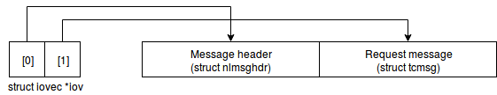

RTNETLINK 1: Fetching queueing discipline stats
Link to source code: qdisc_stats
This article mainly focuses on the implementation part of using RTNETLINK to fetch queueing discipline statistics from the kernel. There are many good articles that cover basics of NETLINK and RTNETLINK in detail. Few of them are listed at the end of this article.
RTNETLINK
RTNETLINK is an extension of NETLINK that allows userspace applications to manipulate linux’s networking stack which is located in the kernel. Userspace applications can fetch routing information and modify kernels internel routing table using RTNETLINK. I came accross RTNETLINK while working with Open vSwitch (OVS). OVS uses RTNETLINK for communication between its userspace process vswitchd and its kernel module (called datapath). OVS also uses it to fetch queueing discipline statistics from the kernel and to modify them.
Implementation
While working on a project on SDN, I needed to extend the functionality of OVS so as to provide us with queueing discipline stats that we need. For this purpose I read a lot of articles on NETLINK and RTNETLINK, but I couldn’t find any which explained how to communicate with Traffic Controller (tc). Since iproute2 is a userspace utility that does exactly what I needed (it queries kernel using RTNETLINK to fetch stats), I thought of figuring it out by reading its source code. Consequently, a lot of code that I am going to present in this article is inspired by iproute2 .
Netlink socket
/* defined in <linux/rtnetlink.h> */
struct sockaddr_nl {
__kernel_sa_family_t nl_family; /* AF_NETLINK */
unsigned short nl_pad; /* zero */
__u32 nl_pid; /* port ID */
__u32 nl_groups; /* multicast groups mask */
}
Message format
Netlink message header is represented by struct nlmsghdr (given below). nlmsg_len is sizeof(struct nlmsghdr) + sizeof(message struct). Choice of message struct depends on the type of message that we are creating. In our case we are requesting the queueing discipline details, so the appropriate struct is struct tcmsg (given below). So for us nlmsglen = sizeof(struct nlmsghdr) + sizeof(struct tcmsg).
nlmsg_type describes the type of message, which in our case is RTM_GETQDISC. A detailed documentation about the types of messages and their respective flags is given here.
nlmsg_flags are flags which furthur describe the message, for example whether it is a dump request or not. In our case, due to a bug in the kernel, we are going to create a dump request (This will be explained later in the post) nlmsg_flags = NLM_F_DUMP | NLM_F_REQUEST.
nlmsg_seq yet to research more about this. (I have not completed the networking course yet!).
nlmsg_pid is the netlink PID of the process sending the message. I kept this empty, and it worked. I still need to figure out more about it!
/* defined in <linux/netlink.h> */
struct nlmsghdr {
__u32 nlmsg_len; /* Length of message including header */
__u16 nlmsg_type; /* Message content */
__u16 nlmsg_flags; /* Additional flags */
__u32 nlmsg_seq; /* Sequence number */
__u32 nlmsg_pid; /* Sending process port ID */
};
We are done creating the netlink message header. Our next task is to create the message content using struct tcmsg (given below for reference).
tcm_family is traffic controller message family, described in sockets.h.
In our case it is equal to AF_UNSPEC. I couldn’t find any documentation related to this address family, but it seems like its Address Family Unspecified - which I assume implies that it is not required in this case. (Will update the post when if I find out. If you happen to know about it, please comment below!).
tcm__pad1 and tcm__pad2 are pads to make sure that data is algined in the memory. This avoids any alignment errors while parsing a received RTNETLINK message. More about it here.
tcm_ifindex is the index of the interface whos queueing discipline information we are requesting. Interface index can be obtained from the interface name using unsigned int if_nametoindex(const char *ifname) defined in net/if.h. Interface name can be obtained from interface index using char *if_indextoname(unsigned int ifindex, char *ifname). More about these functions here. Since we are requesting a dump of qdiscs of all the interfaces, this field doesn’t matter. To make a qdisc info request for a particular interface, this field needs to be filled in with the interface index of the interface we are requesting for. (This specific request does not work due to a bug in the kernel which will be explained in the post later).
Example: converting interface name to index and vice-versa:
/* obtain iface index from iface name */
char d[IFNAMSIZ] = {};
strncpy(d, "enp7s0", sizeof(d)-1);
if (d[0]) {
t.tcm_ifindex = if_nametoindex(d);
}
/* obtain iface name from iface index */
char d[IFNAMSIZ] = {};
printf("dev %s", if_indextoname(tcrecv->tcm_ifindex, d));
tcm_handle and tcm_parent fields are used to make a more specific request, when the queueing discipline attached to the interface(s) is classful. In our case we are making a dump request, so it does not matter for us. Read more about classless and classful queueing disciplines here.
/* defined in <linux/rtnetlink.h> */
struct tcmsg {
unsigned char tcm_family;
unsigned char tcm__pad1;
unsigned short tcm__pad2;
int tcm_ifindex;
__u32 tcm_handle;
__u32 tcm_parent;
/* tcm_block_index is used instead of tcm_parent
* in case tcm_ifindex == TCM_IFINDEX_MAGIC_BLOCK
*/
#define tcm_block_index tcm_parent
__u32 tcm_info;
};
We are done with the request message. What remains is to create the netlink message header by filling in the fields of struct msghdr (given below).
msg_name points to struct sockaddr_nl filled in with the destination address and msg_namelen = sizeof(struct sockaddr_nl).
msg_iov is an array of input/output vectors (called I/O vectors). It is used for reading and writing data from/to buffers which are not neccesarily in contiguous memory locations [1].
We write netlink message header(struct nlmshhdr) and request message (struct tcmsg) at array index 0 and 1 of iov in the following way:
struct tcmsg t = { .tcm_family = AF_UNSPEC };
char d[IFNAMSIZ] = {};
strncpy(d, "enp7s0", sizeof(d)-1);
if (d[0]) {
t.tcm_ifindex = if_nametoindex(d);
}
void *req = (void *)&t;
int type = RTM_GETQDISC;
int len = sizeof(t);
struct nlmsghdr nlh = {
.nlmsg_len = NLMSG_LENGTH(len),
.nlmsg_type = type,
.nlmsg_flags = NLM_F_DUMP | NLM_F_REQUEST,
.nlmsg_seq = 0,
};
struct iovec iov[2] = {
{ .iov_base = &nlh, .iov_len = sizeof(nlh) },
{ .iov_base = req, .iov_len = len }
};

msg_iovlen = 2, since it is an array of size 2. Rest of the fields in struct msghdr is not needed for our purpose. If you know what purpose these data fields serve, please comment about it below, and I will add it to the post!
/* defined in <bits/socket.h> */
/* Structure describing messages sent by
`sendmsg' and received by `recvmsg'. */
struct msghdr
{
void *msg_name; /* Address to send to/receive from. */
socklen_t msg_namelen; /* Length of address data. */
struct iovec *msg_iov; /* Vector of data to send/receive into. */
size_t msg_iovlen; /* Number of elements in the vector. */
void *msg_control; /* Ancillary data (eg BSD filedesc passing). */
size_t msg_controllen; /* Ancillary data buffer length.
!! The type should be socklen_t but the
definition of the kernel is incompatible
with this. */
int msg_flags; /* Flags on received message. */
};
We are almost done with creating the message header (struct msghdr). What remains is filling in the fields of struct sockaddr_nl with the destination address (kernel), assign it to msg_name and its size to msg_namelen.
struct sockaddr_nl dst_addr;
memset(&dst_addr, 0, sizeof(dst_addr));
dst_addr.nl_family = AF_NETLINK;
dst_addr.nl_pid = 0; /* For linux kernel */
dst_addr.nl_groups = 0; /* unicast */
/* struct msghdr {
void *msg_name; //Address to send to
socklen_t msg_namelen; //Length of address data
struct iovec *msg_iov; //Vector of data to send
size_t msg_iovlen; //Number of iovec entries
void *msg_control; //Ancillary data
size_t msg_controllen; //Ancillary data buf len
int msg_flags; //Flags on received msg
};
*/
struct msghdr msg = {
.msg_name = &dst_addr,
.msg_namelen = sizeof(dst_addr),
.msg_iov = iov,
.msg_iovlen = 2,
};
We are now ready with our message. All we need to do now is simply send the message through the netlink socket that we created earlier, using sendmsg():
sendmsg(sock_fd, &msg, 0);
The “no-reply” kernel bug (or maybe bug in my code?)
As I said earlier in the post, requesting a specific queueing discipline, there is “no reply” from the kernel. As such, recvmsg() function enters a blocking state, since no reply is received. Hence, we made a dump request, which works. I am still unsure whether this is because of a problem in my code or because of the bug in the kernel. I tried looking around for a fix, and found out that developers of Open vSwitch had experienced similar problem: Link. If you find out a bug in my code, feel free to contact me or comment below.
Link to source code: qdisc_stats
Rohan Tiwari
Associate at Postman API Lab
My research interests broadly lie in Development using APIs.